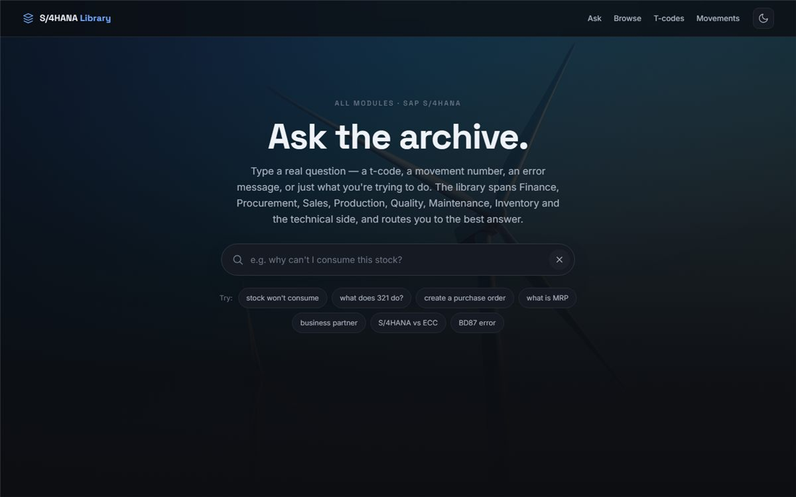

The problem
Inventory control in SAP comes down to a few hundred t-codes and movement types, and the cost of a wrong one is real: stock posted to the wrong state, a reversal that doesn't reverse, a line waiting on parts the system says it has. After moving from SAP ECC to S/4HANA, the old cheat sheets were out of date, and the knowledge was spread across training notes and memory.
I wanted one page that answers "what do I do about this?" fast enough to use between stations.
What I built
The Field Guide
- Live MMBE stock simulator. Post a movement and watch quantities move between stock types; undo posts the matching reversal, the way SAP does it.
- Triage wizard. Describe a symptom and it routes you to the right t-code and correction.
- Searchable index of t-codes and movement types (type "MMBE", "321", or "transfer"), plus a movement-reversal lookup.
- Five process flowcharts, generated from source by a Node script so they never drift from the text.
The Knowledge Base
A companion that widens the scope to the rest of S/4HANA, so a question from purchasing or finance doesn't start from scratch: 87 entries across 13 modules, including procure-to-pay, order-to-cash, finance, controlling, and MRP.
87knowledge entries
13S/4HANA modules
0servers or API keys needed
Key decisions
- Search that understands warehouse language. The knowledge base runs a natural-language search entirely in the browser: synonym expansion (so "move" finds "transfer posting"), weighted scoring, an instant match when you type an exact t-code, and a boost for entries that solve problems when the query reads like a question.
- No backend, works offline. Plant networks and personal devices don't mix well. Everything is static files, so it runs anywhere, including on a phone with no connection.
- Generic on purpose. Plant-specific details (count tolerances, serial versus batch tracking, internal tools) were left out. They vary by site and belong with the site's trainer, not in a public tool.
- Built for mid-shift use. Light and dark themes, large tap targets, and the most common actions one click from the top.
Screenshots


What's next
- Deepen the procurement module alongside SAP C_TS452 certification study.
- Add a printable quick-reference card generated from the same data.